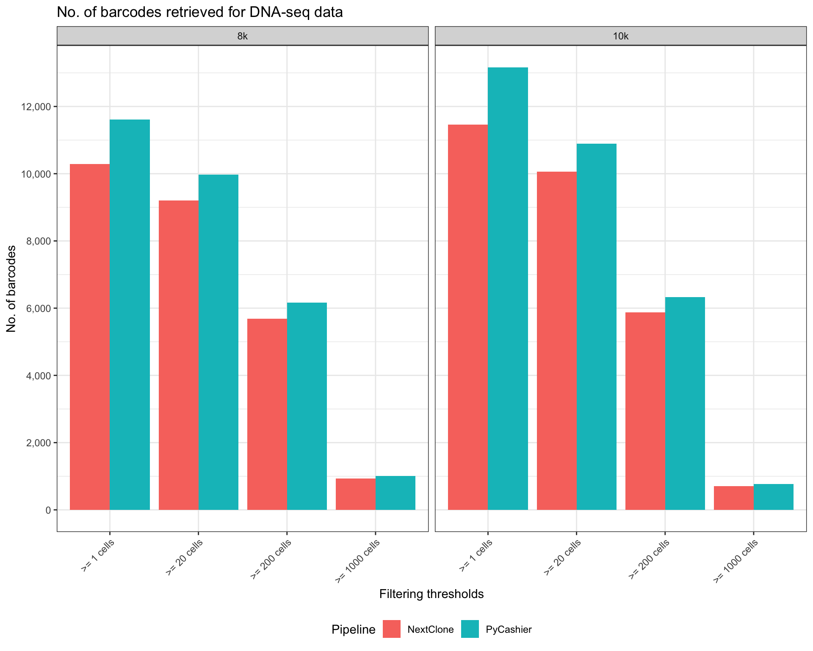
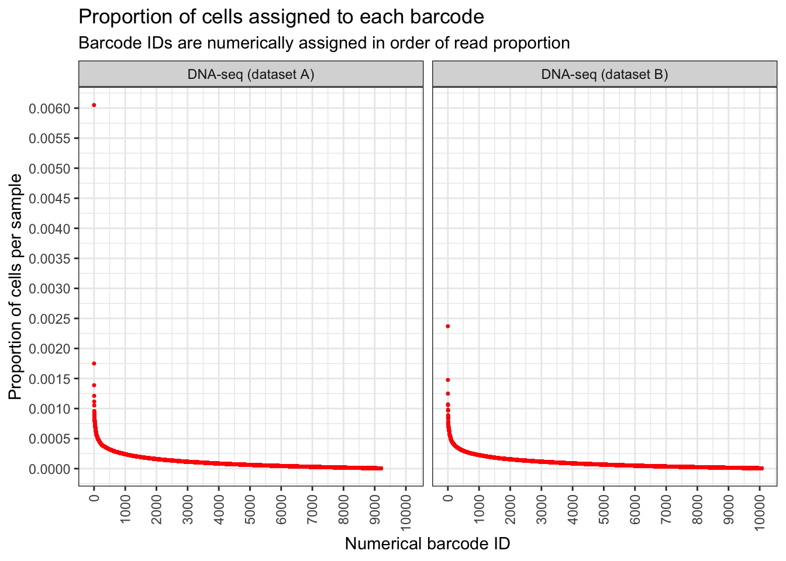

Last updated: 2023-11-15
Checks: 7 0
Knit directory: NextClone-analysis/
This reproducible R Markdown analysis was created with workflowr (version 1.7.0). The Checks tab describes the reproducibility checks that were applied when the results were created. The Past versions tab lists the development history.
Great! Since the R Markdown file has been committed to the Git repository, you know the exact version of the code that produced these results.
Great job! The global environment was empty. Objects defined in the global environment can affect the analysis in your R Markdown file in unknown ways. For reproduciblity it’s best to always run the code in an empty environment.
The command set.seed(20231011) was run prior to running
the code in the R Markdown file. Setting a seed ensures that any results
that rely on randomness, e.g. subsampling or permutations, are
reproducible.
Great job! Recording the operating system, R version, and package versions is critical for reproducibility.
Nice! There were no cached chunks for this analysis, so you can be confident that you successfully produced the results during this run.
Great job! Using relative paths to the files within your workflowr project makes it easier to run your code on other machines.
Great! You are using Git for version control. Tracking code development and connecting the code version to the results is critical for reproducibility.
The results in this page were generated with repository version 673cea9. See the Past versions tab to see a history of the changes made to the R Markdown and HTML files.
Note that you need to be careful to ensure that all relevant files for
the analysis have been committed to Git prior to generating the results
(you can use wflow_publish or
wflow_git_commit). workflowr only checks the R Markdown
file, but you know if there are other scripts or data files that it
depends on. Below is the status of the Git repository when the results
were generated:
Ignored files:
Ignored: .DS_Store
Ignored: .Rhistory
Ignored: .Rproj.user/
Ignored: data/.DS_Store
Ignored: data/cellranger_out/
Ignored: data/nextclone_out/.DS_Store
Untracked files:
Untracked: data/nextclone_out/sc_clone_barcodes_20231115.csv
Unstaged changes:
Deleted: data/nextclone_out/sc_clone_barcodes_20231109.csv
Note that any generated files, e.g. HTML, png, CSS, etc., are not included in this status report because it is ok for generated content to have uncommitted changes.
These are the previous versions of the repository in which changes were
made to the R Markdown (analysis/DNAseq_data_analysis.Rmd)
and HTML (docs/DNAseq_data_analysis.html) files. If you’ve
configured a remote Git repository (see ?wflow_git_remote),
click on the hyperlinks in the table below to view the files as they
were in that past version.
| File | Version | Author | Date | Message |
|---|---|---|---|---|
| html | add7a8f | Givanna Putri | 2023-11-14 | Build site. |
| Rmd | 872093b | Givanna Putri | 2023-11-14 | wflow_publish("analysis/*") |
| html | 9fb414f | Givanna Putri | 2023-11-13 | Build site. |
| Rmd | ca5457a | Givanna Putri | 2023-11-13 | update |
| html | ca5457a | Givanna Putri | 2023-11-13 | update |
| Rmd | 9a79d31 | Givanna Putri | 2023-11-13 | wflow_rename("analysis/NGS_data_analysis.Rmd", "analysis/DNAseq_data_analysis.Rmd") |
| html | 9a79d31 | Givanna Putri | 2023-11-13 | wflow_rename("analysis/NGS_data_analysis.Rmd", "analysis/DNAseq_data_analysis.Rmd") |
Analysis for the DNA-seq 8k and 10k library of MCF7 cell line tagged with ClonMapper protocol.
library(CloneDetective)
library(data.table)
library(ggplot2)
library(scales)NextClone and pycashier output.
The command used to generate NextClone output is available in
code folder.
clones_nxclone <- fread("data/nextclone_out/dnaseq_clone_barcode_counts_20231114.csv")
# The samples in the sample_name column is way too complicated.
# Let's create a new column.
clones_nxclone[, sample_name_simple := gsub("vexGFP-", "", gsub("_.*", "", sample_name))]
clones_nxclone[, sample_name_simple := factor(sample_name_simple, levels = c("8k", "10k"))]
clones_pycashier <- lapply(c("8k", "10k"), function(samp) {
# read_count as the count column so we can use count_retained_clones
dt <- fread(
file = paste0("data/pycashier_out/", samp, ".tsv"),
header = FALSE,
col.names = c("clone_barcode", "read_count")
)
dt[, sample := samp]
return(dt)
})
clones_pycashier <- rbindlist(clones_pycashier)
clones_pycashier[, sample := factor(sample, levels = c("8k", "10k"))]Count the number of unique barcodes with at least x number of cells.
thresholds <- c(1, 20, 200, 1000)
n_barcodes_nxclone <- count_retained_clones(
count_data = clones_nxclone,
thresholds = thresholds,
grouping_col = "sample_name_simple",
count_column = "read_count"
)
n_barcodes_nxclone[, tool := 'NextClone']
setnames(n_barcodes_nxclone, "sample_name_simple", "sample")
n_barcodes_pycashier <- count_retained_clones(
count_data = clones_pycashier,
thresholds = thresholds,
grouping_col = "sample",
count_column = "read_count"
)
n_barcodes_pycashier[, tool := 'PyCashier']
n_barcodes <- rbind(n_barcodes_nxclone, n_barcodes_pycashier)Plot bar chart that compares the number of unique barcodes retrieved by both workflows.
n_barcodes_long <- melt(n_barcodes, id.vars = c("sample", "tool"),
variable.name = "filtering_threshold",
value.name = "n_barcode")
filtering_threshold_levels <- paste(">=", thresholds, "cells")
n_barcodes_long[, filtering_threshold := factor(
gsub("_"," ",gsub("at_least_", ">= ", filtering_threshold)),
levels = filtering_threshold_levels
)]
ggplot(n_barcodes_long, aes(x=factor(filtering_threshold), y=n_barcode, fill=tool)) +
geom_bar(stat="identity", position=position_dodge()) +
theme_bw() +
theme(
axis.text.x = element_text(angle = 45, vjust = 1, hjust=1),
legend.position="bottom"
) +
facet_wrap(~ sample) +
scale_y_continuous(breaks = pretty_breaks(n=10), label = label_comma(accuracy = 1)) +
labs(
y = "No. of barcodes",
x = "Filtering thresholds",
fill = "Pipeline",
title = "No. of barcodes retrieved for DNA-seq data"
)
To show the proportion of barcode’s frequency.
clones_nxclone_filtered <- remove_clones_below_threshold(
count_data = clones_nxclone,
threshold = 20,
count_column = "read_count"
)
clones_nxclone_filtered <- convert_count_to_proportion(
count_data = clones_nxclone_filtered,
grouping_col = "sample_name_simple",
count_column = "read_count"
)plt <- draw_ordered_abundance_plot(
count_data = clones_nxclone_filtered,
facet_column = "sample_name_simple",
y_axis_column = "read_proportion"
)
plt <- plt +
geom_point(size=0.5, colour='red') +
labs(
title = "Proportion of cells assigned to each barcode",
subtitle = "Barcode IDs are numerically assigned in order of read proportion",
x = "Numerical barcode ID",
y = "Proportion of cells per sample"
)
plt
Let’s say we want to sequence 10,000 cells. Based on our NGS data, can we predict what will happen to our clone barcodes? Will we get enough representations?
Do projection by calculating proportion and multiply by amount of cells to be projected to.
How many cells we will get per clone?
clones_nxclone_proportion <- project_clones(
count_data = clones_nxclone,
grouping_col = "sample_name_simple",
count_column = "read_count",
project_amnt = c(10000, 20000)
)
plt <- draw_ordered_abundance_plot(
count_data = clones_nxclone_proportion,
y_axis_column = 'projected_20000_confidence_1',
facet_column = 'sample_name_simple'
) +
geom_point(size = 0.5, colour='forestgreen') +
labs(
y = 'Number of cells',
title = 'Number of cells assigned to each barcode',
subtitle = 'Cell counts computed after projection to 20,000 cells'
)
plt
plt <- draw_ordered_abundance_plot(
count_data = clones_nxclone_proportion,
y_axis_column = 'projected_10000_confidence_1',
facet_column = 'sample_name_simple'
) +
geom_point(size = 0.5, colour='blue') +
labs(
y = 'Number of cells',
title = 'Number of cells assigned to each barcode',
subtitle = 'Cell counts computed after projection to 10,000 cells'
)
plt
How many clones that contain at least 10, 20, 50, 100 cells?
thresholds <- seq(10, 30, 5)
proj_n_clones_retained <- count_retained_clones(
count_data = clones_nxclone_proportion,
thresholds = thresholds,
grouping_col = "sample_name_simple",
count_column = "projected_10000_confidence_1"
)
names(proj_n_clones_retained) <- c("sample", paste(">=", thresholds, "cells"))
proj_n_clones_retained_long <- melt(proj_n_clones_retained, id.vars = c("sample"),
variable.name = "filtering_threshold",
value.name = "n_barcode")
ggplot(proj_n_clones_retained_long, aes(x=factor(filtering_threshold), y=n_barcode)) +
geom_bar(stat="identity", position=position_dodge(), fill="darkorange") +
theme_bw() +
theme(
axis.text.x = element_text(angle = 45, vjust = 1, hjust=1),
legend.position="bottom"
) +
facet_wrap(~ sample) +
scale_y_continuous(breaks = pretty_breaks(n=6),label = label_comma(accuracy = 1)) +
labs(
y = "No. of barcodes",
x = "Filtering thresholds",
fill = "Pipeline",
title = "No. of barcodes estimated for DNA-seq data",
subtitle = "When capturing 10,000 cells"
)
What are the frequency of top 200 clone barcodes? We can present this by computing the number of cells tagged by top 200 clone barcodes.
top_threshold <- 200
top_barcodes <- get_top_barcodes_and_cum_sum(
count_data = clones_nxclone_proportion,
count_column = "projected_10000_confidence_1",
grouping_col = "sample_name_simple",
top_threshold = top_threshold
)Create a line chart that show cumulative number of cells.
ggplot(top_barcodes, aes(x=barcode_rank, y=cum_sum_projected_10000_confidence_1,
group=sample_name_simple, colour = sample_name_simple)) +
geom_line(linewidth=1) +
theme_bw(base_size = 16) +
scale_y_continuous(breaks = pretty_breaks(n=10), labels = label_comma(accuracy = 1)) +
scale_x_continuous(breaks = pretty_breaks(n=10)) +
theme(
axis.text.x = element_text(angle = 90, vjust = 0.5, hjust=1),
legend.position = "bottom"
) +
labs(
y = "Number of cells",
x = "Barcode Ranking",
title = paste("Projected no. of cells for top", top_threshold, "most abundant clones"),
subtitle = "When capturing 10,000 cells",
colour = "Library"
)
| Version | Author | Date |
|---|---|---|
| ca5457a | Givanna Putri | 2023-11-13 |
sessionInfo()R version 4.2.3 (2023-03-15)
Platform: aarch64-apple-darwin20 (64-bit)
Running under: macOS 14.0
Matrix products: default
BLAS: /Library/Frameworks/R.framework/Versions/4.2-arm64/Resources/lib/libRblas.0.dylib
LAPACK: /Library/Frameworks/R.framework/Versions/4.2-arm64/Resources/lib/libRlapack.dylib
locale:
[1] en_US.UTF-8/en_US.UTF-8/en_US.UTF-8/C/en_US.UTF-8/en_US.UTF-8
attached base packages:
[1] stats graphics grDevices utils datasets methods base
other attached packages:
[1] scales_1.2.1 ggplot2_3.4.1 data.table_1.14.8
[4] CloneDetective_0.1.0 workflowr_1.7.0
loaded via a namespace (and not attached):
[1] treemapify_2.5.6 bitops_1.0-7
[3] matrixStats_0.63.0 fs_1.6.1
[5] httr_1.4.4 rprojroot_2.0.3
[7] GenomeInfoDb_1.34.9 tools_4.2.3
[9] bslib_0.4.2 utf8_1.2.3
[11] R6_2.5.1 irlba_2.3.5.1
[13] vipor_0.4.5 BiocGenerics_0.44.0
[15] colorspace_2.1-0 withr_2.5.0
[17] tidyselect_1.2.0 gridExtra_2.3
[19] processx_3.8.0 compiler_4.2.3
[21] git2r_0.31.0 cli_3.6.1
[23] Biobase_2.58.0 BiocNeighbors_1.16.0
[25] DelayedArray_0.24.0 sass_0.4.5
[27] callr_3.7.3 stringr_1.5.0
[29] digest_0.6.31 rmarkdown_2.20
[31] XVector_0.38.0 scater_1.26.1
[33] pkgconfig_2.0.3 htmltools_0.5.4
[35] sparseMatrixStats_1.10.0 MatrixGenerics_1.10.0
[37] highr_0.10 fastmap_1.1.0
[39] rlang_1.0.6 rstudioapi_0.14
[41] DelayedMatrixStats_1.20.0 jquerylib_0.1.4
[43] generics_0.1.3 farver_2.1.1
[45] jsonlite_1.8.4 BiocParallel_1.32.5
[47] dplyr_1.1.0 RCurl_1.98-1.10
[49] magrittr_2.0.3 BiocSingular_1.14.0
[51] GenomeInfoDbData_1.2.9 scuttle_1.8.4
[53] Matrix_1.5-3 Rcpp_1.0.10
[55] ggbeeswarm_0.7.1 munsell_0.5.0
[57] S4Vectors_0.36.1 fansi_1.0.4
[59] ggfittext_0.10.1 viridis_0.6.2
[61] lifecycle_1.0.3 stringi_1.7.12
[63] whisker_0.4.1 yaml_2.3.7
[65] SummarizedExperiment_1.28.0 zlibbioc_1.44.0
[67] grid_4.2.3 parallel_4.2.3
[69] promises_1.2.0.1 ggrepel_0.9.3
[71] lattice_0.20-45 beachmat_2.14.0
[73] knitr_1.42 ps_1.7.2
[75] pillar_1.8.1 GenomicRanges_1.50.2
[77] codetools_0.2-19 ScaledMatrix_1.6.0
[79] stats4_4.2.3 glue_1.6.2
[81] evaluate_0.20 getPass_0.2-2
[83] vctrs_0.5.2 httpuv_1.6.9
[85] gtable_0.3.1 purrr_1.0.1
[87] cachem_1.0.6 xfun_0.39
[89] rsvd_1.0.5 later_1.3.0
[91] viridisLite_0.4.1 SingleCellExperiment_1.20.0
[93] tibble_3.1.8 beeswarm_0.4.0
[95] IRanges_2.32.0